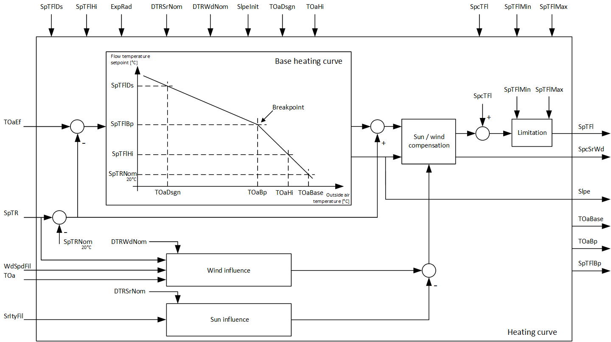

[HCRV] 加热曲线
功能块 HCRV 计算流量温度设定值。
HCRV 根据室温设定值、有效室外温度、过滤风速和过滤太阳辐射强度计算气流温度设定值。 HCRV 计算尽可能低的流量温度设定值，但仍足以满足每个消费者的热量需求。
下图说明了如何计算流量温度设定值：

加热曲线根据有效外部空气温度 [TOaEf] 确定气流温度设定点 [SpTFl]。它使用图表上的两个点和辐射指数 [ExpRad]。断点坐标、外部温度基点 [TOaBase] 和加热曲线的平均斜率 [Slpe] 也由 HCRV 提供。
Radiator exponent
辐射体指数 [ExpRad] 越高，曲线偏离直线的程度就越大。下表说明了典型供热系统的推荐设置：
热源 | 散热器指数 |
|---|---|
散热器 | 1.3 |
板式加热器 | 1.2...1.3 |
对流器 | 1.25...1.45 |
地暖 | 1.1 |
Flow temperature setpoint
水流温度设定值 [SpTFl] 是控制水流温度的自动化站逻辑的设定值。可以对流动温度设定值进行修正以补偿风和阳光。太阳强度 [SrItyFil] 和风速 [WdSpdFil] 经过过滤，以避免水流温度设定值出现不必要的波动。还可以对输入 [SpcTFl] 处的流量温度进行设定值修正。设定值的最小和最大限值可以在输入 [SpTFlMin] 和 [SpTFlMax] 上进行配置。
Connect an outside air temperature sensor
HCRV 使用有效室外温度 [TOaEf]（过滤值的组合），因为室温对室外温度变化的反应会延迟且减弱。功能块HRA可以计算有效的室外温度。
如果需要风补偿，则必须连接输入 [TOa]。
外部空气高温 [TOaHi] 在内部受到外部空气高温设定点 [TOaDsgn] 的限制。
Room temperature setpoint and compensation for wind and solar radiation
互连或设置室温设定点 [SpTR] 以匹配房间加热组的室温控制或预控制。
标称太阳辐射的室温升高 [DTRSrNom] 是在设计室外温度和 20 °C 室温下，如果太阳辐射强度从 0.0 W/m 增加，则预期室温升高。2to 1000 W/m2.
如果连接了已过滤的输入太阳辐射强度 [SrItyFil]，则将输入 [DTRSrNom] 设置为 0.0，但不需要对太阳影响进行补偿。
标称风速下的室温降低量 [DTRWdNom] 是当风速从 0 m/s 增加到 20 m/s. 时，设计外部和 20 °C 室温下的预期室温降低量
如果连接了输入滤波风速 [WdSpdFil]，则将输入 [DTRWdNom] 设置为 0.0，但不需要风补偿。

[SpTRNom] 是一个常数，值为 20 °C / 68 °F。
输入 | 描述 | 数据类型 | 默认值 |
|---|---|---|---|
TOaEf | Effective outside temperature | 真实的 | 0.0 [°C] -100.0…50.0 [°C] |
TOa | Outside temperature | 真实的 | 0.0 [°C] -100.0…50.0 [°C] |
SpTR | Room temperature setpoint | 真实的 | 20.0 [°C] 5.0…35.0 [°C] |
SrItyFil | Solar radiation intensity filtered | 真实的 | 0.0 [W/m2] 0.0…100.0 [W/m2] |
WdSpdFil | Filtered wind speed | 真实的 | 0.0 [m/s] 0.0…20.0 [m/s] |
SpcTFl | Setpoint correction flow temperature | 真实的 | 0.0 [°C] -10.0…10.0 [°C] |
SpTFlMax | Maximum flow temperature setpoint | 真实的 | 95.0 [°C] 20.0…130.0 [°C] |
SpTFlMin | Minimum flow temperature setpoint | 真实的 | 20.0 [°C] 10.0…65.0 [°C] |
TOaDsgn | Design outside temperature 根据供热厂规划数据定义 | 真实的 | -11.0 [°C] -50.0…10.0 [°C] |
SpTFlDs | Flow temperature setpoint for design outside temperature 根据供热厂规划数据定义 | 真实的 | 60.0 [°C] 25.0…130.0 [°C] |
TOaHi | Outside temperature high 根据供热厂规划数据定义 | 真实的 | 15.0 [°C] 5.0…25.0 [°C] |
SpTFlHi | Flow temperature setpoint for high outside temperature 根据供热厂规划数据定义 | 真实的 | 30.0 [°C] 20.0…65.0 [°C] |
ExpRad | Radiator exponent | 真实的 | 1.3 1.0…1.5 |
DTRSrNom | Room temp. increase for nominal solar radiation | 真实的 | 5.0 [K] 0.0…15.0 [K] |
DTRWdNom | Room temp. decrease for nominal wind speed | 真实的 | 5.0 [K] 0.0…10.0 [K] |
SlpeInit | Slope initialization 加热曲线斜率的初始值 | 真实的 | 0.0 0.0…25.0 |
输出 | 描述 | 数据类型 | 默认值 |
|---|---|---|---|
SpTFl | Flow temperature setpoint | 真实的 | 20.0 [°C] 0.0…130.0 [°C] |
Slpe | Slope | 真实的 | 1.0 0.0…25.0 |
SpcSrWd | Setpoint correction for solar radiation and wind | 真实的 | 0.0 [K] |
TOaBp | Outside temperature at breakpoint | 真实的 | 10.0 [°C] -50.0…700.0 [°C] |
SpTFlBp | Flow temperature setpoint at breakpoint | 真实的 | 35.0 [°C] 20.0…130.0 [°C] |
TOaBase | Base point for outside temperature | 真实的 | 20.0 [°C] 5.0…700.0 [°C] |
|
SysUnits | System of units 表示system of units由块使用。 | 整数 | 1: International system of units (SI) (fallback) 1...5 |
1: International system of units (SI) (fallback) | |||
ErrCode | Error code indication | 整数 | 0: No error |
= 0 - No error | |||